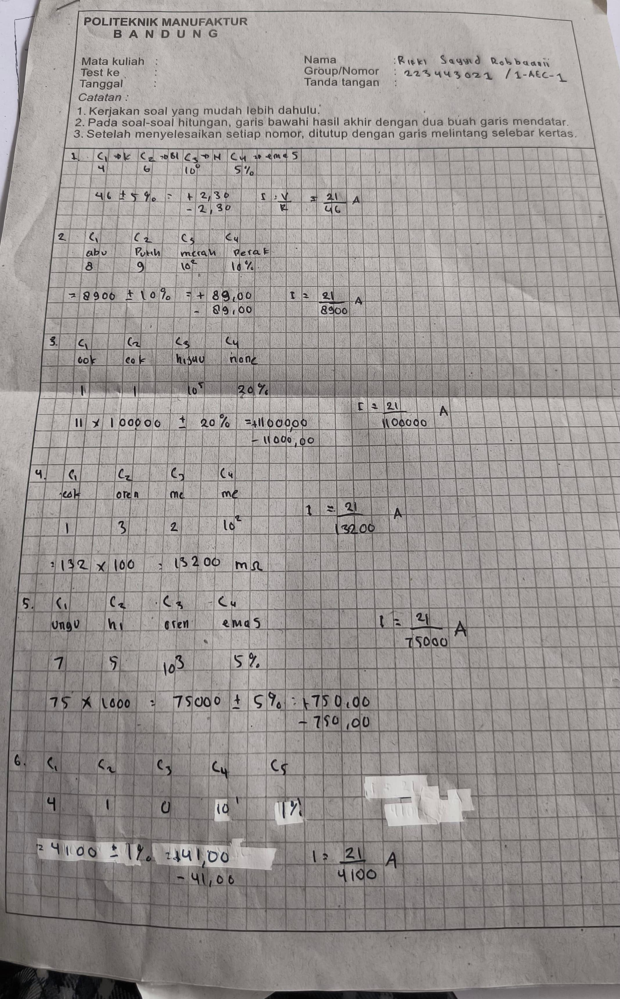

Identifikasi Nilai Resistif

Melakukan identifikasi nilai resistif pada resistor sesuai dengan kode warna yang diberikan. Kode warna resistor adalah pita berwarna
yang mengidentifikasikan nilai resistif (resistansi) dan persentase toleransinya dengan ukuran fisik resistor yang menunjukkan
peringkat wattnya. Warna pada pita warna atau gelang resistor menunjukkan nilai yang berbeda. Gambar diatas adalah hasil
identifikasi saya dari soal yang diberikan, yaitu: 1. kuning biru hitam emas, 2. abu-abu putih merah perak, 3. coklat coklat hijau
clear, 4. coklat orange merah merah, 5. ungu hijau orange emas, 6. kuning coklat hitam coklat coklat.